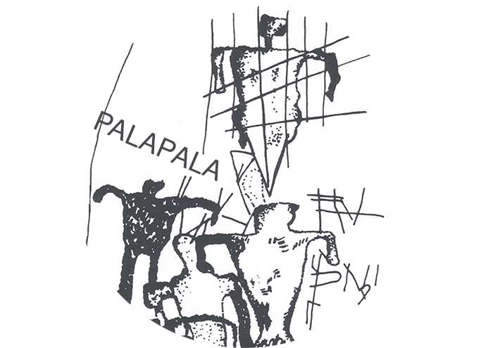

 PROJECTS ABOUT SOCIAL PRACTICE RESEARCH
EMPTY STREETS is a fragment from a song called "Finally An Empty Street" written in the mid-2000s with a few close friends. The song is probably about different things for different people, but for me it's about movement: from one part to another, from darkness to light, and from noise to the beautiful harmonics that emanate from some dissonance beyond the stave. I've come to recognize this dissonance in so many music collaborations with friends back home in Hawaiʻi, but also in the tractor harvesting the roots of the Bellflower in Misato, Akita or in the amplification of voices and microphone feedback in among poets performing under the restrictions of martial law. For me, an empty street is a starting point for illuminating an opening in the grid, a space to think through Pō and Ao an the ever-transformative archipelago.
I find myself working more with old friends these days, a stroke of luck in an sea of possibility. Like before, we work in images, musical instruments and microphones; amplification and serenity; in the expanse that belongs to Pele and Poli'ahu, Kanaloa and concrete. Our struggle is our organization.